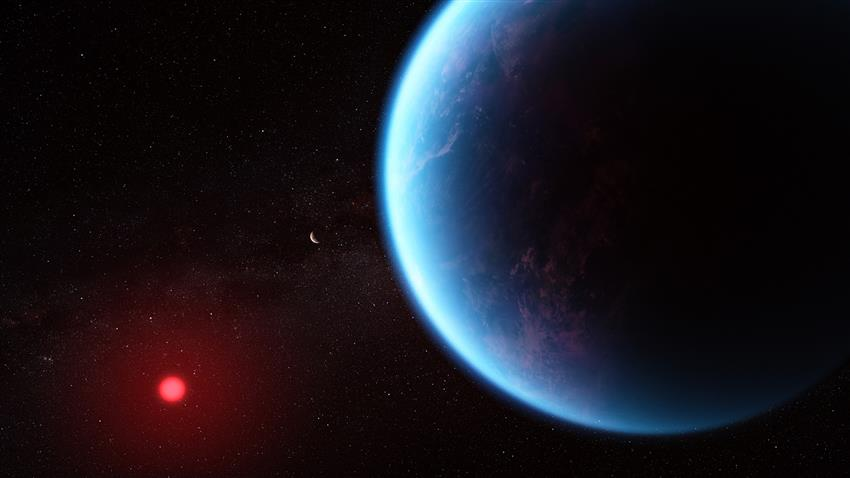

A Nearby Planet with Abundant Life-Supporting Molecules
In September, the JWST discovered methane and carbon dioxide in the atmosphere of a nearby exoplanet named K2-18b, which is larger than Earth. This could be a habitable planet given its proximity to its star.
Shining Spotlight on the First Supermassive Black Hole

The JWST helped astronomers observe starlight from two early galaxies, where they believe one of the first supermassive black holes emerged.
Pillars of Creation

The Webb Telescope has captured stunning images of the Eagle Nebula, revealing newborn stars hidden within the iconic pillars. These protostars are still in the early stages of formation, and Webb's infrared imaging has provided unprecedented insights into the star-forming process.
Maisie's Galaxy: A Glimpse into the Early Universe

Scientists found Maisie's Galaxy, a super-old galaxy that likely sprang into existence 390 million years after the Big Bang.
Exploring TRAPPIST-1b's Enigmatic Atmosphere
Scientists are closely studying the TRAPPIST-1 system, which has seven Earth-sized planets around a Jupiter-sized star.
Distant Galaxies

Webb has observed the most distant galaxies ever, dating back to just 350 million years after the Big Bang. These ancient galaxies provide scientists with valuable insights into the early universe.
Exoplanet Atmosphere
Webb has analyzed the atmosphere of WASP-39b, a gas giant exoplanet, detecting carbon dioxide and sulfur dioxide. This breakthrough has significant implications for understanding the formation and potential habitability of exoplanets.
Titan's Clouds

The Webb Telescope has captured images of clouds on Saturn's moon, Titan. These observations help scientists understand Titan's unique atmosphere and its potential for life.
Southern Ring Nebula
Webb's image of the Southern Ring Nebula has revealed a complex, dynamic system with multiple stars and gas clouds, challenging previous assumptions about the nebula's formation.
Born Dwarf with Sand Clouds
The Webb Telescope has discovered a brown dwarf with silicate clouds, resembling sand. This finding expands our understanding of these enigmatic objects.